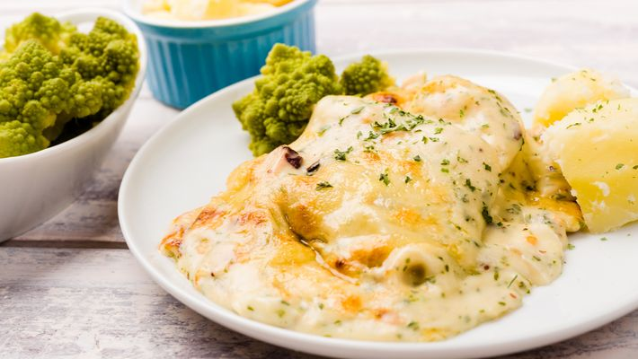

Filé de Tilápia
Ingredientes
1 kg de filé de tilápia
Suco de 1/2 limão
4 tomates em rodelas
4 cebolas em rodelas
1/2 xícara de chá de azeitonas pretas picadas
1/2 kg de batatas cozidas
1 colher de sopa de manteiga
1/2 xícara de chá de creme de leite
300 g de mussarela ralada
Azeite
Sal